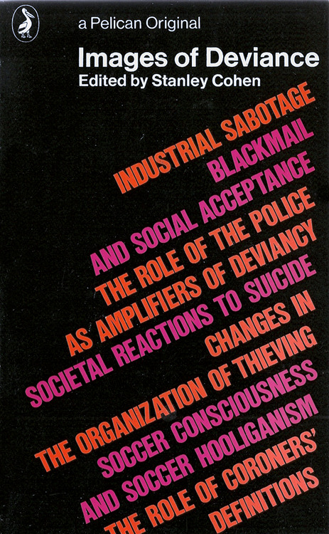
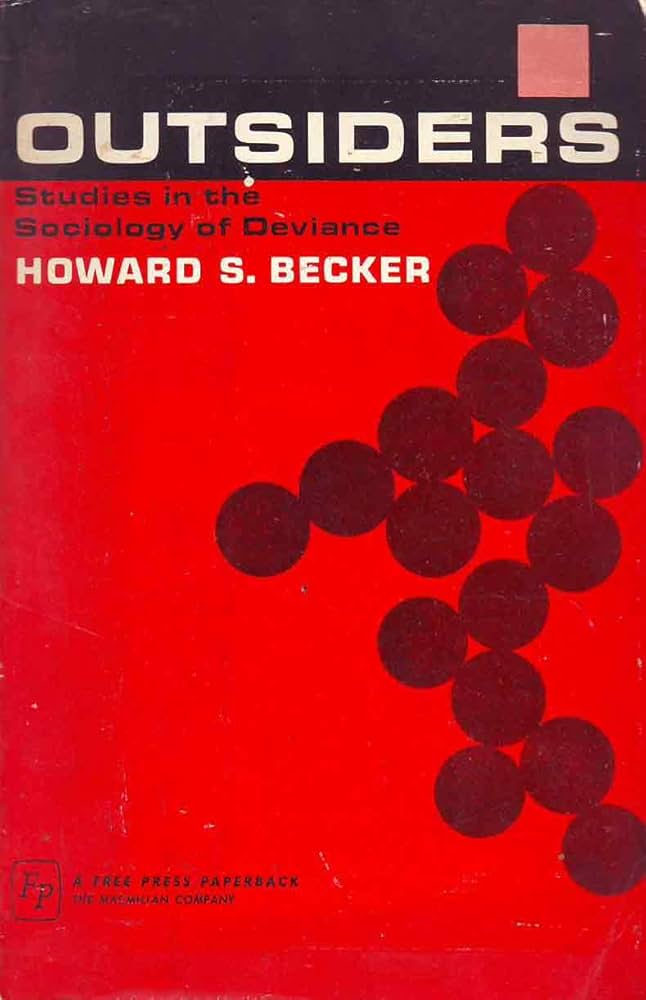
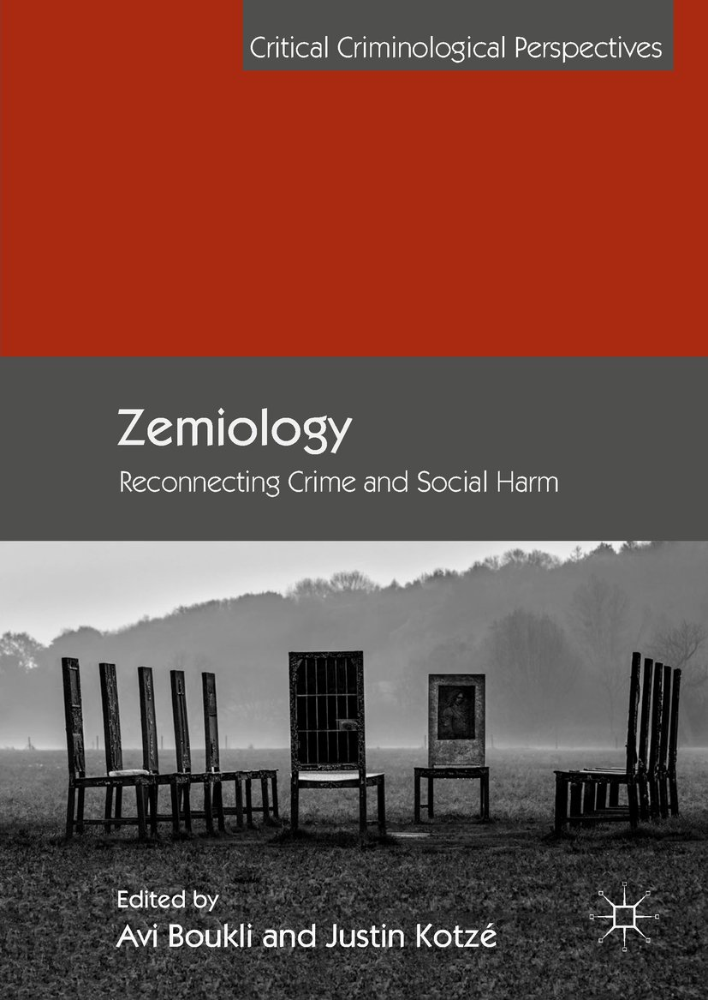
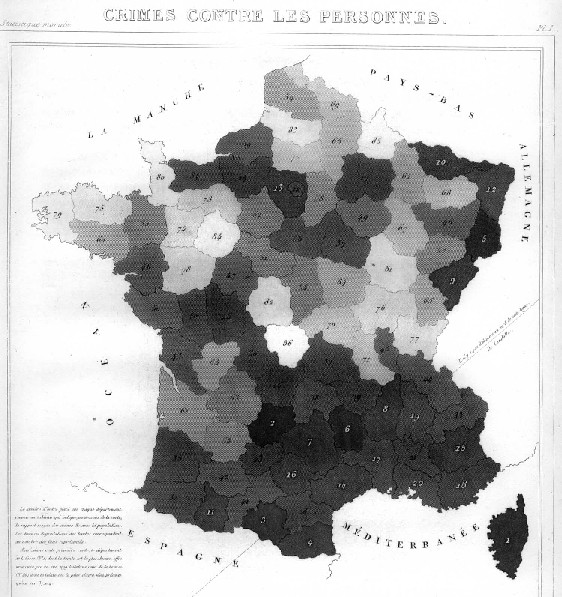
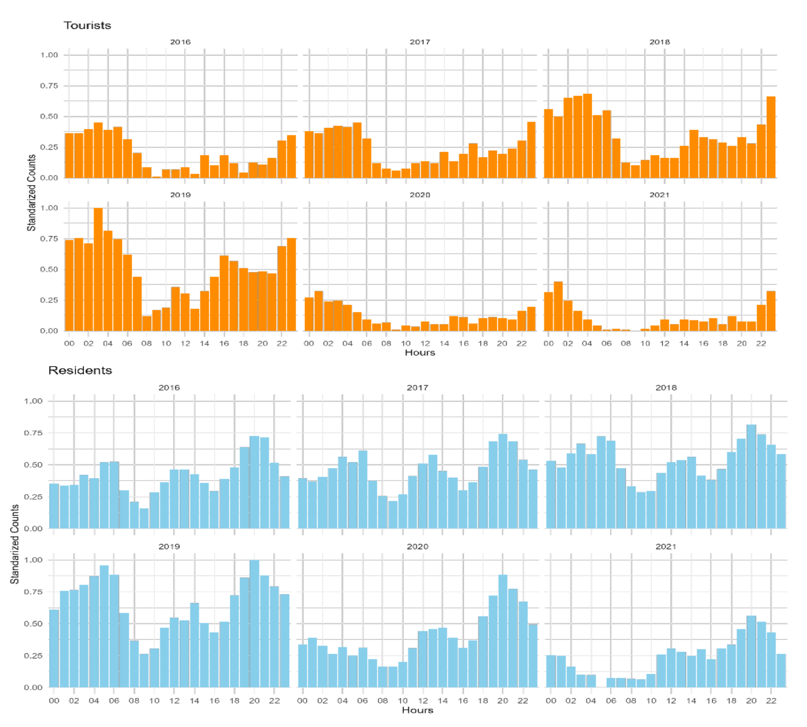
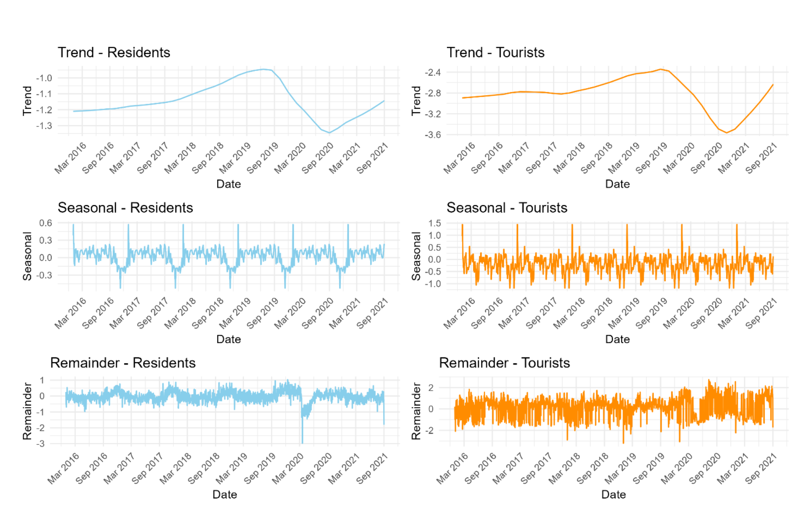
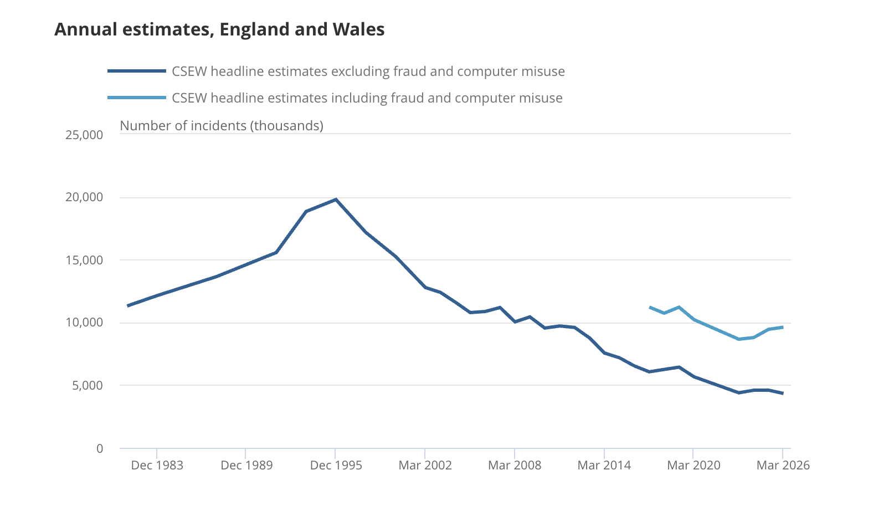
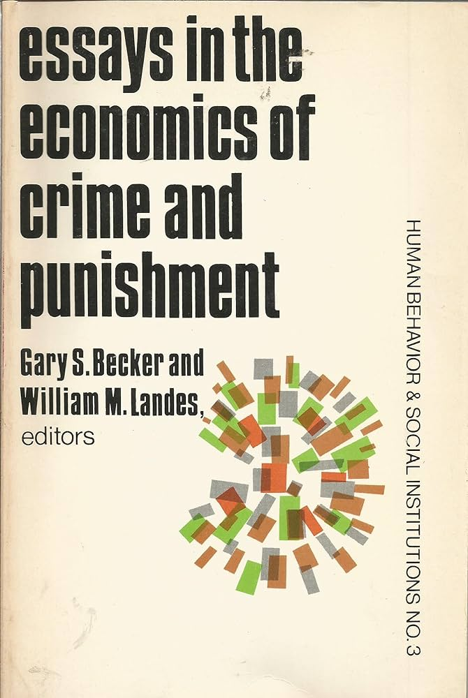
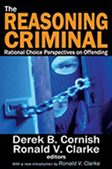
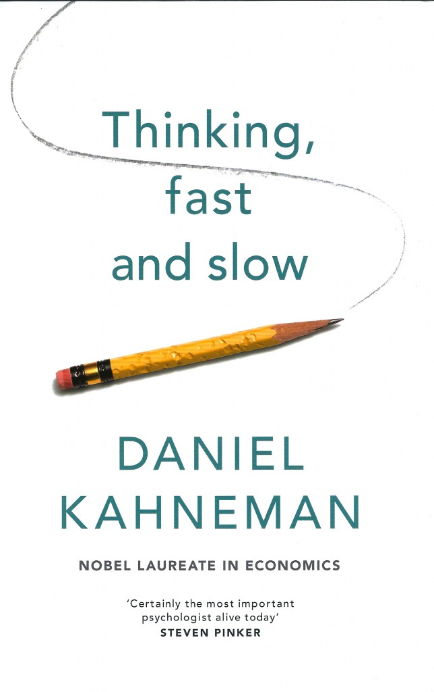

4 El delito
4.1 El delito como objeto de estudio
4.1.1 ¿Delito o daño social?
Como hemos visto se suele definir de forma sintética a la criminología como la ciencia del delito. La propia raíz etimológica del término criminología alude a la noción del crimen como central para nuestra disciplina. Parecería poco controvertido, por tanto, afirmar que el principal objeto de estudio de la criminología es el delito. Como señala Gottfredson (2011, 36): “Limitar la criminología a los comportamientos que violan la ley penal es sin duda el enfoque más común y sensato de la criminología.” Zedner (2011) va aún más lejos, para ella:
“La criminología carece de un marco teórico distintivo, una ciencia diferenciada o una metodología, y debe la cohesión que posee al delito como su foco de atención y su justificación racional.” (Zedner 2011, 272)
Como vamos a ver es algo un poco más complicado. Ya a principios del siglo XX se produjo un debate entre Edwin Sutherland, considerado uno de los principales criminólogos del siglo XX, y el jurista Paul Tappan sobre cuál era el legítimo ámbito de estudio de la criminología.
Para Tappan (1947) la criminología tenía que centrar su mirada en los actos definidos como delitos por la legislación penal cuando ya había una persona acusada y sancionada penalmente por el Estado, mientras que Sutherland (1949) usaba una definición más sociológica y ampliada a considerar infracciones legales no necesariamente constitutivas de ilícitos penales.
El contexto de la discusión fue la introducción del concepto de delincuencia de cuello blanco propuesto por Sutherland (1940), y al que retornaremos en el capítulo 10, pese a que muchas de las infracciones que él denominaba así, aun estando prohibidas por la ley, rara vez se tramitaban por la vía penal, sino ante organismos administrativos y jurisdicciones civiles. Confundiendo el estatus legal con la conveniencia científica o metodológica, Tappan (1947) le replicaba lo siguiente:
“Consideramos que el «delincuente de cuello blanco», el infractor de las normas de conducta y la personalidad antisocial no son delincuentes en ningún sentido significativo para el científico social, a menos que haya infringido una ley penal. No podemos considerarlo como tal a menos que haya sido debidamente condenado. Puede ser un grosero, un pecador, un leproso moral o el diablo encarnado, pero no se convierte en delincuente por los insultos sociológicos a menos que la autoridad política constituida diga que lo es.” (Tappan 1947, 97)
No obstante, sería absurdo pretender que la criminología solo estudia o debería estudiar infracciones penales. Nunca ha sido así, por más que el estudio del delito sea central a la disciplina, ni probablemente debería serlo. De hecho algunos autores han sido muy críticos sobre lo que ceder al Estado y su legislación penal los contornos de nuestra disciplina implica. En palabras de Colin Sumner (1994, 301-2):
“Tomar las categorías políticamente organizadas de dominación estatal y las categorizaciones de los funcionarios encargados de hacer cumplir la ley como nociones científicas es convertir las herramientas sectoriales e históricas del Estado en conceptos de comportamiento universalmente válidos. Es tomar el Estado como Dios de todo conocimiento y asumir que incluso el consentimiento popular a la legislación transforma automáticamente el juicio político vinculado al contexto en verdad universal. Como tal, es un acto de fe ciega en el orden político moderno, o el abandono de todos los principios de moralidad e investigación a los dioses de la carrera profesional, el dinero y el ascenso. En cualquiera de los dos casos, se trata, en el sentido antiguo o nuevo de la palabra ideología, de una práctica ideológica.”
Aunque es cierto que las criminólogas dedican la mayor parte del tiempo a estudiar infracciones penales, gestionadas por el sistema de justicia penal, también es cierto que estudian otro tipo de ilícitos o conductas. Generalmente la focalización en distintos conceptos de lo “desviado” o lo infractor ha venido ligado a distintas perspectivas disciplinarias o teóricas (dentro de o relacionadas con) la criminología.
Algunos psicólogos que trabajan en el ámbito de la criminología, por ejemplo, han centrado su atención no en el concepto de delito sino el de desorden de conducta, un patrón de comportamiento repetitivo y persistente que puede incluir sustracciones de propiedad, mentiras, violencia física, vandalismo, incumplimiento imprudente de las normas y otras formas de comportamiento antisocial. Mientras que durante mucho tiempo dentro de la sociología hubo un interés notable por la sociología de la desviación. Este campo de estudio estaba interesado en explorar las acciones o comportamientos que violan las normas sociales de reglas formales, así como las violaciones informales de las normas sociales (por ejemplo, el rechazo de las costumbres y las tradiciones). Para estos sociólogos el punto de anclaje era la desviación, siendo el delito solo una de las muchas formas de desviación.
A día de hoy, por ejemplo, hay muchas criminólogas que han desarrollado buena parte de su carrera estudiando el consumo de drogas (Measham, Aldridge, y Parker 2001; Measham, Williams, y Aldridge 2011), pese a que esta no es una conducta delictiva (ni siquiera ilegal) en muchos países. Lo mismo podríamos decir del ejercicio de la prostitución, aunque en determinados contextos esta ilegalizada y en algunos países criminalizada, eso no ocurre en todas las latitudes. No por ello deja de ser de interés para quienes nos dedicamos a la criminología.


Más recientemente ha habido propuestas de resituar el tema de interés de nuestra disciplina. Una de estas propuestas es la desarrollada por los defensores de los llamados estudios de la regulación. Algunos autores como el criminólogo australiano John Braithwaite, de hecho, considera vital para la criminología el dedicar mucha más energía de la dedicada hasta ahora a entender mecanismos reguladores diferente de los articulados en torno al sistema de control y justicia penal y, por tanto, prestar más atención, entre otras cosas, al distintos mecanismos de regulación (y las infracciones ligadas a los mismos).
“aunque la disciplina de la criminología está actualmente consolidada en términos institucionales, las herramientas intelectuales de la disciplina tienen una relevancia cada vez menor para el mundo social que está surgiendo… las principales tendencias de desarrollo de la política gubernamental implican un cambio de un estado del bienestar, gobernado por técnicas keynesianas de gestión de la demanda, a una nueva forma de estado regulador, basado en una combinación neoliberal de competencia de mercado, instituciones privatizadas y formas descentralizadas y a distancia de regulación estatal. Estos nuevos estilos de gobernanza se basan en el reconocimiento de nuevas fuerzas y mentalidades sociales, en particular de la lógica globalizadora de la gestión de riesgos, y reconfigurarán cada vez más los ámbitos social y político de formas que tendrán consecuencias para la vigilancia y el control de la delincuencia. El enfoque tradicional de la criminología en los delitos callejeros y las instituciones policiales, judiciales y penitenciarias puede ser cada vez menos relevante para los nuevos daños, riesgos y mecanismos de control que están surgiendo en la actualidad.” (Braithwaite 2000, 222)
Vemos así como aspectos importantes de la vida económica y social vienen a ser regulados por el derecho administrativo que a medida que ha ido creciendo ha ido aumentando el espacio del derecho administrativo sancionador y la aparición de entidades reguladoras encargadas de velar por la aplicación del derecho que no forman parte del sistema de justicia penal. Retomaremos estas ideas en el capítulo 8, por ahora valga entender que el estudio de las infracciones administrativas también puede interesar a la criminología.


Otros autores han propuesto el desarrollo de una zemiología como alternativa crítica a la criminología, una disciplina centrada en el estudio no del delito, sino del daño social (Hillyard y Tombs 2007). Esta corriente surge para poner el acento en daños sociales generados por el Estado o grandes corporaciones, pero que rara vez son criminalizados. Desde esta perspectiva se argumenta que ceñirnos solamente al estudio de las conductas que son criminalizadas y pasan a ser, por tanto, tipificadas en las legislaciones penales como delitos dejaría fuera de nuestra mirada una serie de actos altamente dañosos, pero que por las dinámicas de poder en la sociedad actual no llegan al Código Penal. Por el contrario, señalan que pese a las pomposas declaraciones de penalistas la legislación penal están plagados de infracciones que recogen comportamientos muy triviales y que probablemente no merecen reproche penal alguno. Piensan que el control del delito es ineficaz, doloroso, y perpetuador de diferencias sociales y que el concepto de delito (y la criminología construida sobre este concepto) no hace más que legitimar la expansion de este control. Es una perspectiva que aspira a liberar a las criminólogas del corsé de la legislación penal. Por tanto proponen que debemos abandonar el estudio del delito y adoptar, en su lugar, una «perspectiva del daño social» que no diferencie entre los daños calificados como delitos y otros tipos de daños.
De tal forma, aunque el delito sigue siendo el principal punto de anclaje de nuestra disciplina, lo cierto es que probablemente no hay que ser excesivamente dogmático al respecto. Existen argumentos legítimos para pensar en otros puntos de anclaje. Pero, por otro lado, tampoco deberíamos abandonarlo sin más como objeto de estudio. Como bien postula Zedner (2011, p.) la irrupción de estas perspectivas:
“no debe implicar el abandono del delito como categoría jurídica. El compromiso crítico con el derecho penal y la teoría penal permite plantear difíciles preguntas sobre la forma en que se llega a las infracciones delictivas, cómo se definen y estructuran, a quién se aplican y las consecuencias que deben derivarse de ellas.”
De hecho, como abordaremos de forma más detallada en el capítulo 8 y brevemente en la próxima sección, los procesos de criminalización: pensar críticamente sobre la delincuencia, qué justifica la criminalización, por qué y según qué principios, entra de lleno en el ámbito de la criminología y merece más atención criminológica de la que ha recibido hasta ahora (Zedner 2011).
4.1.2 ¿Pero que es un delito?
Y esto nos lleva directamente a la siguiente pregunta. ¿Qué es un delito? Como señala Gottfredson (2011, 35):
“A muchos les puede parecer extraño … que haya algún problema para responder a la pregunta «¿qué es el delito?», pero la definición de delito para la criminología ha sido durante mucho tiempo objeto de un considerable debate. Sin duda, la respuesta más común se basa en la ley, es decir, en el comportamiento clasificado como delito en la legislación. Según esta visión estándar de los libros de texto, un delito es un comportamiento prohibido por el derecho penal y la tarea de la criminología es describir y luego explicar los patrones de violación del derecho penal y los esfuerzos realizados para limitarlos.”
Los penalistas suelen definir los delitos como las acciones u omisiones tipificadas como tales por la ley penal que, teóricamente, suponen los ataques o puestas en peligros más graves de los bienes jurídicos más importantes para la ciudadanía. Generalmente se considera que un delito es “la conducta (acción u omisión) típica, antijurídica, culpable y punible” (Muñoz-Conde 2022), que de forma secuencial reune esos distintos elementos elaborados por la dogmática penal (tipicidad, antijuridicad, culpabilidad y punibilidad) y que estudiaréis en vuestra asignatura de Derecho Penal.
“El derecho penal se ocupa de identificar las formas de comportamiento, acción u omisión, la estructura de los delitos, los principios jurídicos subyacentes y los elementos constitutivos que, en ausencia de justificación o excusa, dan lugar a la responsabilidad penal. Para los teóricos del derecho penal y los filósofos del derecho, una forma obvia de resistirse a la criminalización excesiva es desarrollar una explicación más sólida de lo que debe y no debe ser criminalizado. Se centran en articular principios y valores para guiar y restringir a quienes formulan y aprueban nuevas leyes penales, así comoa quienes las administran.” (Zedner 2011, 278)
El delito, no obstante, no solamente es una categoría legal, sino que también es una construcción social. Las conductas que se consideran delictivas han ido variando a lo largo del tiempo y los códigos penales también varían de forma significativa entre países. Hay algunas conductas que suelen ser consideradas delictivas de forma más o menos universal, pero su regulación y contornos también ha cambiado a lo largo del tiempo. Cada vez hay un mayor interés por parte de historiadores de entender el delito y la justicia penal. Estos están produciendo contribuciones muy relevantes para entender precisamente estas variaciones a lo largo de la historia.
En todo caso, para hacer frente a esta limitación para ponernos de acuerdo sobre lo que es un delito, Felson (2006, 35) propone que adoptemos un enfoque pragmático y consideremos como delito “cualquier conducta identificable que un número apreciable de gobiernos haya prohibido y a la que aplique sanciones penales”. Otros criminólogos en cambio proponían una definición del delito que tratase de trascender el problema de la vinculación a legislaciones penales concretas tratando de identificar su naturaleza universal (Gottfredson 2011). Así Gottfredson y Hirschi (1990, 15) definían el delito como “actos de fuerza o fraude realizados en beneficio del interés propio”.
El delito también es una construcción social en otro sentido. Como señala Zedner (2011, 272):
“El delito no es solo una cuestión de lo que se define legislativamente como tal, sino de lo que los funcionarios de la justicia penal realmente persiguen, investigan, procesan y castigan.”
En los manuales de justicia penal se hace referencia a menudo a la metáfora del embudo, para aludir a cómo empezamos con los delitos cometidos, de los que apenas se denuncian la mitad, se resuelve un porcentaje menor, y muchos menos se adjudican o resuelven a traves del proceso y castigo penal. Entre el universo legal de delitos contemplados en el Código Penal y los delitos actualmente denunciados, perseguidos y penalmente resueltos media (y siempre mediará) un amplio abismo.
Como señalan Felson y Eckert (2019):
“En la mayoría de los delitos conocidos por la policía, nadie es arrestado. Cuando hay un arresto, la mayoría de los casos nunca se envían al fiscal. De los casos que llegan a juicio, la mayoría conducen a un acuerdo entre el abogado y el fiscal, no a un juicio. De los que llegan a juicio, es mucho más probable que se celebre un juicio sin jurado en un tribunal … local que un juicio con jurado en toda regla, como se ve en la televisión. Incluso las personas condenadas tienen muchas posibilidades de evitar el encarcelamiento, a pesar de varias décadas de políticas de «ley y orden». Por ejemplo, se estimaron unos 3,3 millones de robos en viviendas en Estados Unidos en 2016.11 De ellos, aproximadamente la mitad de los incidentes se denunciaron a la policía. Aproximadamente 1 de cada 10 resultó en arrestos. Estimamos que solo alrededor del 1 por ciento de los robos dan lugar a una condena y aún menos a encarcelamiento. La probabilidad de ser castigado por un delito relacionado con las drogas es aún mucho menor.”

De lo que se deriva que (Zedner 2011, 279-80):
“Comprender cómo se construye el delito en los medios de comunicación, la política y la opinión pública, en la labor policial y en el proceso de justicia penal sea un antídoto importante contra el enfoque de la «ley en los libros», cuyo enfoque tradicional se centra en el derecho doctrinal… Sin prestar atención a los procesos políticos y sociales por los que se construye y media la delincuencia; los impulsores y limitaciones administrativos, financieros y políticos del enjuiciamiento y el castigo; y los contextos sociales, culturales y profesionales en los que actúan los agentes de la justicia penal, existe el peligro de que se dé una visión en gran medida artificial de la delincuencia… Una función fundamental de la criminología es aportar pruebas de cómo se produce la criminalización, no solo en las páginas de los códigos penales y los informes jurídicos, sino también en las complejas interacciones entre los medios de comunicación, los políticos y la opinión pública; en la toma de decisiones y el ejercicio de la discrecionalidad por parte de los funcionarios de la justicia penal; y a lo largo de esa entidad tortuosa que es el proceso penal. La criminología también tiene mucho que decir sobre las relaciones de poder, sobre todo las de clase, raza y género, que subyacen a la decisión de criminalizar e informar las prácticas policiales y punitivas. Revela los factores contingentes, los supuestos y prejuicios culturales y los imperativos políticos que sustentan la decisión de considerar criminal un acto u omisión.”
La criminología se preocupa, por tanto, por al menos tres tipos de cuestiones en lo que refiere al delito:
¿Cómo determinados actos u omisiones vienen a ser definidos como delitos y cuáles son los procesos, intereses y dinámicas que guían los actos legislativos de criminalización y de descriminalización?
¿De qué forma las instancias del sistema de justicia penal (policía, fiscales, jueces, prisiones) actúan frente al delito en la práctica y cuales son los factores que condicionan e influyen estas respuestas?
¿Que delitos se cometen y cuándo, donde, cómo y por qué (con independencia de la respuesta que las instancias del Estado den a estos delitos)?
Las dos primeras preguntas serán abordadas de forma más detenida en el capítulo 8. En el apartado 2 de este capítulo nos centraremos en la tercera de ellas. Pero antes nos vamos a adentrar brevemente en otro debate: ¿Existen rasgos más o generales que definan a los actos que definimos como delictivos?
4.1.3 ¿Las características generales del delito?
Si nos dejáramos llevar por los medios de comunicación social, tendríamos que caracterizar los delitos como eventos dramáticos y generalmente violentos. Tanto la industria del entretenimiento como los medios informativos compiten en la economía de la atención y buscan captar la nuestra contando historias sobre delitos que reúnen estas características. Felson y Eckert (2019) llama esto la falacia del drama:
“La mayoría de los actos delictivos no son muy inteligentes ni románticos. La falacia dramática afirma que los delitos más publicitados están muy alejados de la vida real. Los medios de comunicación se dejan llevar por una secuencia de horror y distorsión. Encuentran una historia de terror y luego entretienen al público con ella. Ganan dinero con ello, al tiempo que crean un mito en la mente del público. Luego se basan en ese mito para la siguiente historia de terror. Así, el crimen se vuelve muy distorsionado en la mente del público”
Marcus Felson es uno de los autores que precisamente más ha insistido en la necesidad de desarrollar una visión más realista y prosaica del delito. Su obra está llena de perlas que le sirven para subrayar esto:
“Los detectives ficticios de televisión no tendrían ningún interés en la mayoría de … asesinatos”
“La mayoría de los asesinatos son el trágico resultado de una pequeña y estúpida disputa. De hecho, el asesinato es menos un delito que una consecuencia. El camino hacia el asesinato no difiere mucho del de una pelea común, salvo que, por desgracia, alguien ha muerto. El asesinato tiene dos características fundamentales: una pistola demasiado cerca y un hospital demasiado lejos”
“El trabajo policial consiste en horas y horas de aburrimiento… El riesgo anual de morir en acto de servicio es solo del 0,000113, es decir, aproximadamente 11 por cada 100 000 agentes”
“La mayoría de los delitos son muy sencillos y no requieren habilidades avanzadas”
“La mayoría de las organizaciones criminales son muy rudimentarias”
“Las bandas delictivas son extremadamente aburridas la mayor parte del tiempo”
Aunque estamos acostumbrados a una determinada imagen del delito, esta está contaminada por las narraciones que del mismo se hacen en los medios de comunicación que tienden a exagerar la prevalencia de determinados delitos y una serie de características de los mismos que generalmente no están presentes en la mayor parte de las transgresiones que se producen en la vida cotidiana.
En 1990 Michael Gottfredson y Travis Hirschi publicaron un libro, A general theory of crime, que ha sido muy influyente en nuestra disciplina. En este libro ellos proponían una nueva teoría del delito que tendréis ocasión de estudiar en vuestras asignaturas de teoría del delito (la teoría del autocontrol). En el capítulo segundo de este libro, Gottfredson y Hirschi (1990, 16) proponían tratar de identificar los rasgos esenciales del delito. Para estos autores:
“El hecho es que la gran mayoría de los actos delictivos son asuntos triviales y mundanos que provocan pocas pérdidas y menos ganancias. Se trata de sucesos cuya distribución temporal y espacial es muy predecible, que requieren poca preparación, dejan pocas consecuencias duraderas y, a menudo, no producen el resultado deseado por el delincuente.”
Gottfredson y Hirschi (1990) consideran que lo que sabemos sobre la distribución espacio temporal del delito sugiere que los delincuentes muestran una reticencia a esforzarse en la comisión de delitos; demuestran que la accesibilidad aumenta el riesgo de las víctimas potenciales; y muestran que evitar ser detectado forma parte del cálculo del delincuente. Los delitos comunes, que son la gran mayoría de los delitos, requieren poco esfuerzo, planificación, preparación o habilidad y tienen un coste para las víctimas que es generalmente muy trivial en términos económicos o personales. Si casi la mitad de los delitos no se denuncian es precisamente porque las víctimas no los consideraron suficientemente importantes como para tomarse la molestia, como las encuestas de victimación nos recuerdan una y otra vez.
Evidentemente es muy difícil hacer generalizaciones y siempre hay excepciones, por raras que sean. Pero si algo debéis derivar de las observaciones de Felson y Eckert (2019) y Gottfredson y Hirschi (1990) es que es importante aproximarse al estudio del delito con una visión mucho más prosaica del mismo de la que hemos adquirido a traves de los medios de comunicación social.
Conviene, no obstante, hacer aquí una advertencia, porque de otro modo estaríamos entrando en contradicción con lo que defendíamos en la primera sección de este capítulo. Cuando Felson, o Gottfredson y Hirschi, nos dicen que el delito es un asunto trivial y mundano, que requiere poca habilidad y deja escasa ganancia, no están describiendo el delito sin más: están describiendo, sobre todo, la delincuencia común, la que llega a las estadísticas policiales y a las encuestas de victimación. Y esa delincuencia común es lo que la criminología ha mirado durante buena parte de su historia. Sus generalizaciones son, por tanto, generalizaciones sobre el tema que nuestra disciplina se ha ido dando a sí misma, y no verdades universales sobre toda transgresión. Porque hay delitos que no encajan en absoluto en ese retrato. El fraude fiscal de una gran corporación, la manipulación de un mercado financiero, el vertido sistemático de residuos tóxicos, la trata de seres humanos, la tortura ordenada desde un aparato estatal o buena parte de la ciberdelincuencia contemporánea exigen planificación, conocimiento experto y división del trabajo, y se prolongan durante meses o años sin que podamos ubicarlos en un momento y un lugar concretos. Sus consecuencias, además, están muy lejos de ser triviales. Algo parecido cabe decir de la violencia en el ámbito de la pareja, que rara vez es un episodio aislado y sí un patrón sostenido en el tiempo.
Nada de esto invalida las observaciones de Felson o de Gottfredson y Hirschi: para el grueso de los delitos que se cometen a diario son acertadas, y siguen siendo el mejor antídoto frente a la falacia dramática. Pero conviene retener la lección de fondo, sobre la que volveremos en la tercera parte de este manual: cuando la criminología describe “el delito”, suele estar describiendo el delito de quienes tienen poco poder, que es también el delito que el sistema penal persigue con más diligencia y sobre el que, precisamente por eso, disponemos de más datos. Que la delincuencia de los poderosos aparezca poco en nuestros manuales no significa que sea infrecuente ni poco dañina; significa que la mirada criminológica se construyó mirando hacia otro lado. Desconfiad, por tanto, de cualquier afirmación sobre “la naturaleza del delito” sin preguntaros antes de qué delitos se habla y de cuáles procede la evidencia.
4.2 El delito como evento espacio temporal
4.2.1 La estadística moral
El análisis de las variaciones temporales y espaciales, el dónde y el cuándo, de la delincuencia han jugado un papel central en la práctica de la criminología científica. La llamada escuela de la estadística moral inauguró este tipo de estudios y aproximaciones empíricas al delito.
El Essai sur la Statistique Morale de la France (Ensayo sobre la estadística moral de Francia) de Guerry, publicado en 1833 (Guerry 1833), y los trabajos que Quetelet publicaba por esos mismos años (Quetelet 1835) utilizaron tablas y mapas temáticos para relacionar las tasas de criminalidad con variables sociales como la alfabetización, la riqueza y la geografía. Ambos se apoyaban en la misma fuente: el Compte général de l’administration de la justice criminelle, la primera estadística judicial nacional del mundo, que Francia venía publicando desde 1827. Quetelet era belga, pero su criminología se construyó sobre datos franceses.

Sus hallazgos desmentían, además, varias de las creencias de la época. Los delitos contra la propiedad eran más frecuentes en el norte rico e industrializado, mientras que los delitos contra las personas se concentraban en el sur más pobre: no había, por tanto, una relación simple entre pobreza y delito. Guerry explicaba la pauta patrimonial por la mayor abundancia de bienes que sustraer allí donde hay riqueza, esto es, por la oportunidad. Tampoco encontraron el efecto pacificador que los reformadores esperaban de la instrucción pública: los departamentos con mayores niveles de alfabetización no registraban menos delincuencia, sino en ocasiones más. Quetelet, por su parte, sostenía que lo determinante no era tanto la pobreza absoluta como la desigualdad y la coexistencia de riqueza y miseria en un mismo territorio.
Las primeras investigaciones de Quetelet demostraron que muchos tipos de delitos siguen patrones estacionales, y que ciertos delitos alcanzan su punto álgido en épocas específicas del año. Por ejemplo, los delitos violentos suelen aumentar durante los meses más cálidos, un patrón que se ha confirmado y ampliado en investigaciones posteriores. Su trabajo demostró que estas regularidades temporales se mantenían estables a lo largo de los años, lo que sugiere que la delincuencia está influenciada por factores sociales y ambientales recurrentes, en lugar de ser puramente aleatoria o deberse únicamente a decisiones individuales.
El enfoque empírico y basado en datos de Guerry y Quetelet sentó las bases para desarrollos posteriores en criminología, incluyendo el análisis espacial, los estudios ecológicos y el uso de métodos cuantitativos en las ciencias sociales.
4.2.2 La criminología ambiental y la geografía del delito
La criminología siguió trabajando el estudio de la geografía del delito, con un grado creciente de sofisticación estadística y metodológica (Medina y Solymosi 2023) hasta nuestros días. Hoy esta es una de las áreas de mayor actividad investigadora en la criminología.
La American Society of Criminology tiene una división dedicada al estudio de variaciones espaciales (Community and Place), la European Society of Criminology tiene un grupo de trabajo en criminología espacial (Space, place, and crime) y la Sociedad Española de Investigación Criminológica no se queda atrás, con un grupo en criminología ambiental. Algunos grados de criminología en España ya incorporan asignaturas optativas en herramientas cartográficas (sistemas de información geográfica) para aprender a hacer mapas del delito y análisis espaciales. Finalmente, muchos departamentos de policía en otros países (en España aún es inusual) emplean a criminólogas o geógrafos para hacer este tipo de trabajo como analistas del delito y producir informes que sirvan para el desarrollo de respuestas estratégicas y tácticas. La criminología espacial o ambiental ha experimentado un crecimiento notable, por tanto, también a nivel institucional.
La criminología ambiental ha venido a documentar que el delito no se distribuye de forma aleatoria, sino que determinadas regiones, ciudades, barrios, calles, y lugares concentran un volumen desproporcionado de delitos. Estos lugares con altos niveles de delincuencia es lo que se llaman puntos calientes (hot spots en inglés). Este hecho es tan universal y bien documentado que algunos criminólogos consideran que podemos hablar de la existencia de una ley de la concentración espacial (Weisburd 2015).
Históricamente ha habido un desplazamiento en el foco de interés. Cuando Guerry desarrollaba sus mapas de la delincuencia en Francia en el siglo XIX estaba estudiando variación regional; la llamada Escuela de Chicago (que estudiaréis en la asignatura de teorías criminológicas) estaba interesada en entender diferencias entre barrios; estudios más recientes, por el contrario, están interesados en entender que calles, que intersecciones de calles, o que direcciones concretas o lugares concentran más delincuencia. Hemos pasado de estudiar variación a nivel más agregado a unidades de análisis más localizadas.
La criminología espacial ha estado interesada en entender cuestiones diversas como, por ejemplo (Bruinsman y Johnson 2018; Andresen 2019):
¿Cuáles son los factores que explican la concentración del delito en distintos espacios?
¿En qué medida es relevante la movilidad humana en los espacios urbanos para entender la distribución territorial del delito?
¿De que forma los delincuentes y las víctimas se desplazan en el espacio y en qué medida es esto relevante?
¿Que características del espacio físico/arquitectonico y del diseño urbano contribuyen al delito?
¿Existen algunos usos del espacio público que pueden ser criminógenos?
¿Es posible predecir que zonas tendrán niveles elevados del delito en el futuro?
¿Podemos identificar la probable residencia de delincuentes en serie si conocemos donde han cometido sus delitos?
¿Es el delito contagioso a nivel espacial?
¿Cual es la mejor forma de construir y diseñar vivienda de protección oficial para inhibir la delincuencia?
¿Que pueden hacer los gestores del espacio (Eck, Linning, y Herold 2023) para prevenir el delito?
¿Que impacto tiene el delito en las comunidades y espacios en los que ocurre?
¿Mapas del delito o mapas de la denuncia?
La policía llega a conocer los delitos, sobre todo, porque alguien se los cuenta: en Inglaterra y Gales, en torno a dos tercios de los delitos registrados llegaron a su conocimiento por denuncia de la víctima. La denuncia es, por tanto, el filtro decisivo. El despliegue policial también cuenta, pero de forma muy desigual según el tipo de delito: resulta determinante en aquellos que solo salen a la luz si la policía los busca activamente (tráfico y tenencia de drogas, tenencia de armas, desórdenes públicos), y mucho menos en los que dependen de que la víctima acuda a comisaría.
El problema para la criminología espacial es que la propensión a denunciar no se reparte de forma homogénea por el territorio. Buil-Gil, Medina, y Shlomo (2021) estimaron la cifra negra para cada municipio y cada barrio de Inglaterra y Gales a partir de la Crime Survey for England and Wales. Alrededor del 60% de los delitos no llegaban a la policía, pero ese porcentaje variaba enormemente de un sitio a otro: la cifra negra era mayor en los municipios más pobres, pero también en los más ricos (los de renta intermedia eran los que más denunciaban), mayor en núcleos urbanos pequeños y periféricos que en las grandes conurbaciones o en el mundo rural, y mayor en barrios con más población sin titulación y con menos residentes nacidos en el país.
Lo interesante es que los dos extremos de esa curva no responden al mismo mecanismo. En los barrios más desfavorecidos, el motivo principal para no denunciar es la desconfianza: cuatro de cada diez víctimas que no denunciaron creían que la policía no haría nada o que el asunto no le interesaría. En los barrios más acomodados domina otro motivo, que el delito era demasiado trivial como para molestarse. Existe además un debate abierto sobre el papel de la cohesión comunitaria, que para algunos autores reduce la denuncia porque permite resolver los conflictos por otras vías (Baumer 2002) y para otros la aumenta, porque una comunidad cohesionada coopera más con la policía (Goudriaan, Wittebrood, y Nieuwbeerta 2006; Jackson et al. 2013).
La conclusión práctica es la que ya conocéis: los mapas elaborados solo con datos policiales miden a la vez dónde ocurre el delito y dónde la gente denuncia. Comparar barrios sin tener esto presente puede llevarnos a confundir una cosa con la otra.
4.2.3 El análisis temporal del delito
Las variaciones temporales de la delincuencia son también un objeto central de estudio para la criminología. Conviene advertir, eso sí, que bajo esa etiqueta caben tres preguntas muy distintas. Una es la de los ciclos cortos: a qué hora y en qué día de la semana se concentran los delitos, algo que se explica sobre todo por el horario social, esto es, por cuándo coinciden en un mismo sitio las personas, los bienes y quienes podrían vigilarlos. Otra es la de los ciclos estacionales: si hay meses del año con más delincuencia, y cuánto de esa variación se debe al clima y cuánto a las rutinas que el calendario impone. Y la tercera es la de las tendencias: si la delincuencia sube o baja a lo largo de décadas o de siglos, una pregunta que se responde con datos mucho más frágiles y con explicaciones de otra naturaleza. Que los robos se concentren los viernes por la noche y que el homicidio lleve siglos descendiendo en Europa son dos hechos ciertos que no tienen nada que ver el uno con el otro. Los abordaremos en ese orden, de la escala más corta a la más larga.
Comencemos por los ciclos cortos. Los delitos se encuentran altamente concentrados en momentos específicos del día y de la semana, pero la intensidad de estas concentraciones varía por tipo de delito y región. Por ejemplo, algunos estudios sugieren que los robos a usuarios de bancos o servicios de entrega de comida a domicilio suelen concentrarse en horas muy concretas, mientras que los hurtos y otro tipo de robos exhiben una menor concentración (Prieto-Curiel 2021). Estos “puntos calientes” temporales son estables en el tiempo y pueden ser visualizados como “latidos” (heartbeats) del delito, mostrando periodos de alto y bajo riesgo.

Los delitos suelen aumentar los fines de semana y durante la noche, especialmente para las lesiones y ciertos robos en zonas nocturnas de ocio y entretenimiento, para luego descender dramáticamente durante la madrugada. En los puntos de conexión de los sistemas de transporte público, los delitos son más comunes durante las noches, y en los períodos vacacionales, con factores ambientales (por ejemplo, la presencia de establecimientos de venta de alcohol) influenciando estos patrones.
Pasemos a los ciclos estacionales ahora. La mayoría de los estudios indican que los delitos violentos y contra la propiedad tienden a alcanzar su punto álgido en verano y a disminuir en invierno, pero abundan las excepciones y los matices, ya que algunos delitos muestran poca o ninguna estacionalidad y los patrones espaciales suelen permanecer estables incluso cuando las tasas generales fluctúan. Entre las explicaciones de estos patrones se encuentran la teoría de la actividad rutinaria, los efectos meteorológicos y los factores sociales y ambientales, pero la interacción entre estos factores es compleja y, en ocasiones, controvertida (Andresen y Malleson 2013; McDowall, Loftin, y Pate 2011; Linning, Andresen, y Brantingham 2016).
[INSERTAR FIGURA]
La teoría de las actividades rutinarias
La teoría de las actividades rutinarias fue desarrollada precisamente para tratar de entender cambios en los niveles de delincuencia. Inicialmente desarrollada por Lawrence E. Cohen y Marcus Felson en un artículo titulado Social change and crime rate trends: a routine activity approach, esta teoría ofrece una perspectiva única sobre las tendencias de las tasas de criminalidad al enfocarse en las circunstancias en las que ocurren los actos delictivos predatorios, en lugar de las características o motivaciones de los delincuentes. La teoría argumenta que el delito no es simplemente el resultado de inclinaciones criminales individuales, sino que está fundamentalmente moldeado por las oportunidades que se presentan a través de las actividades rutinarias de la vida diaria.
Cohen y Felson (1979) consideran que para que un delito ocurra se tiene que producir la convergencia espacio temporal de tres elementos:
Un delincuente potencial: La teoría da por sentada la existencia de individuos con inclinaciones criminales, sin profundizar en las razones específicas de su motivación.
Un objetivo adecuado: Esto se refiere a una persona u objeto que sea atractivo como objetivo para un delincuente. La idoneidad de un objetivo está influenciada por cuatro elementos clave, a menudo resumidos por el acrónimo VIVA:
Valor: Cuán deseable es el objetivo para el delincuente (por ejemplo, CDs populares sobre los clásicos).
Inercia: La facilidad con la que el objetivo puede ser movido o transportado (por ejemplo, los productos electrónicos ligeros son más susceptibles que los electrodomésticos pesados).
Visibilidad: Cuán expuesto está el objetivo a posibles delincuentes (por ejemplo, mostrar dinero en público o dejar objetos de valor cerca de una ventana).
Acceso: Cuán fácilmente puede un delincuente llegar al objetivo (por ejemplo, patrones de calles, bienes colocados cerca de una puerta).
La ausencia de un guardián capaz: Un guardián es cualquiera cuya presencia o proximidad podría disuadir un crimen. Este es a menudo un ciudadano común —como un ama de casa, un hermano, un amigo o un transeúnte— en lugar de un oficial de policía o un guardia de seguridad, y su vigilancia puede ser inadvertida. Cuando los guardianes están ausentes, el objetivo se vuelve particularmente vulnerable al ataque.
La teoría de la actividad rutinaria argumenta que la oportunidad es una “causa fundamental” del delito, más importante que las variables personales y sociales. Sostiene que los cambios en la vida comunitaria y la estructura social pueden aumentar las tasas de criminalidad simplemente al alterar la cantidad de oportunidades delictivas, incluso sin ningún cambio en las motivaciones de los posibles delincuentes. La teoría establece explícitamente que ningún crimen puede ocurrir sin las oportunidades físicas para llevarlo a cabo; por lo tanto, las oportunidades de crimen son condiciones necesarias para que el crimen ocurra.
La teoría destaca cómo la organización espacial y temporal de las actividades sociales facilita o dificulta que las personas traduzcan las inclinaciones criminales en acción. Una hipótesis central es que la dispersión de actividades fuera de los hogares y las familias aumenta las oportunidades delictivas y, por lo tanto, conduce a tasas de criminalidad más altas. Por ejemplo, el aumento de mujeres que ingresaron a la fuerza laboral remunerada a tiempo completo significó que más hogares quedaran sin vigilancia durante el día, contribuyendo a un aumento de los robos en domicilios.
Igualmente, los cambios sociales a gran escala, como los avances tecnológicos y los cambios en la organización social, influyen significativamente en las oportunidades delictivas. La difusión de ordenadores portátiles y otros dispositivos móviles de alto valor llevó a un aumento en el volumen de bienes duraderos ligeros y fácilmente robables. El mayor uso de automóviles expandió el territorio accesible a los delincuentes depredadores y dejó más coches vulnerables al robo.
Para estos autores es fundamental entender que las oportunidades del delito no se distribuyen de manera uniforme, sino que se concentran en tiempos y lugares específicos, reflejando los ritmos diarios y los movimientos de personas y propiedades. En ese sentido, las actividades ilegales se “alimentan de” y son “inter-dependientes con” las actividades rutinarias y legales de la vida cotidiana. Los mismos factores que aumentan las oportunidades para actividades legítimas (como la libertad de movimiento, nuevos bienes de consumo, vida social) pueden también aumentar inadvertidamente las oportunidades para el crimen predatorio.
La delincuencia aumenta cuando hay más gente en la calle o durante las vacaciones. El clima y la temperatura pueden influir en la delincuencia, pero sus efectos suelen ser secundarios con respecto a los factores sociales y relacionados con cambios en las actividades cotidianas de las personas, y la variabilidad inter-anual puede ser elevada. Algunos estudios advierten contra la atribución excesiva de la estacionalidad al clima, señalando la importancia de los factores estocásticos y sociales.
[INSERTAT FIGURA]
El mes del año es un fuerte indicador de los niveles de delincuencia en muchos contextos, lo que respalda el uso de la estacionalidad en la previsión de la delincuencia y la asignación de recursos. Sin embargo, existen excepciones: algunos delitos (por ejemplo, los homicidios) muestran una estacionalidad débil o inconsistente, y los patrones microespaciales pueden permanecer estables incluso cuando las tasas generales fluctúan. La pandemia de COVID-19 (Nivette et al. 2021) y otras perturbaciones sociales importantes pueden anular los patrones estacionales típicos.

[MENCIONAR CAMBIOS TECNOLOGICOS Y LEGALES COMO DETERMINANTES]
Una de las cuestiones más debatidas en los últimos tiempos ha sido el llamado crime drop (descenso del delito) y en qué grado este ha sido un fenómeno generalizado.
Tanto en Estados Unidos como en el Reino Unido, las primeras potencias criminológicas, el delito experimentó un muy visible descenso a partir de la década de los 1990. En la siguiente figura podéis ver los datos de la Crime Survey for England and Wales durante este período.

Como se puede observar hay un descenso notable del delito desde mediados de los 90 hasta nuestros días en Inglaterra y Gales. ¿Por qué? ¿Es esta una tendencia también observable en otros países? ¿En qué medida se ha producido un desplazamiento hacia otro tipo de delitos que estos datos no miden bien?Empecemos por la última. Es verdad que las encuestas de victimación, aunque (cuando bien hechas) son generalmente consideradas como el instrumento más fiable para medir variaciones temporales en los niveles globales de delincuencia (ya que no se ven afectadas por el sesgo de denuncia), tradicionalmente no han medido delitos que a día de hoy se han vuelto muy relevantes. La ciberdelincuencia, en particular, es la forma delictiva del siglo XXI. Las encuestas de victimación, en su mayoría, no han medido históricamente estas formas delictivas. La Crime Survey for England and Wales fue la primera encuesta nacional que comenzó a experimentar y medir algunos de estos nuevos delitos. En la gráfica mostrada arriba se puede ver como a partir del 2017 esta encuesta incluye medidas de ciberdelincuencia. El gráfico muestra hasta que punto este tipo de delitos se ha convertido en un elemento central para entender la delincuencia contemporánea.
¿Por qué se produce este descenso? Este ha sido un muy agrio debate en el que no han faltado todo tipo de hipótesis que no resultan del todo convincentes: cambios demográficos, cambios en los mercados de drogas, variaciones en tácticas y estrategias policiales, economías más saludables, la introducción del aborto, reducciones en los niveles de exposición al plomo, cambios culturales, etc. (Blumstein y Wallman 2000; Zimring 2011; Farrell, Tilley, y Tseloni 2010). Farrell et al. (2008) han propuesto como alternativa la hipótesis de la seguridad, cambios en los niveles y prácticas ciudadanas y empresariales de seguridad han podido ser un factor determinante. Ellos muestran análisis que sugieren que la caída de dos tercios en los robos de automóviles en el Reino Unido se debió en gran medida a las mejoras en los sistemas de cierre centralizado e inmovilización y especulan que la adopción de otro tipo de medidas de seguridad en el hogar y en las empresas puede haber sido determinante en este sentido. Por lo que nos interesa, baste señalar que entender los factores que pueden ser responsables de cambios en los niveles de delincuencia es también una fructífera línea de investigación dentro de la criminología.
Las tendencias históricas del delito
Hay un creciente interés por entender cambios en la delincuencia a largo plazo. Por las dificultades de obtener datos fiables sobre otras formas de delincuencia, buena parte de la investigación se ha centrado en estudiar los patrones de la violencia, fundamentalmente en Europa, desde mediados del siglo XVI hasta nuestros días. El trabajo de Eisner (2003) en este ámbito es de obligada lectura. Eisner (2003, 83) observa que:
“se pueden distinguir diferentes trayectorias a largo plazo en la disminución de los homicidios entre las distintas regiones europeas. Sin embargo, los patrones de edad y sexo en los delitos violentos graves han cambiado muy poco a lo largo de varios siglos. La disminución a largo plazo de las tasas de homicidios parece ir acompañada de una disminución desproporcionada de los homicidios entre las élites y de una caída de los conflictos entre hombres en el espacio público. Se han ofrecido diversas explicaciones teóricas para esta disminución a largo plazo, entre ellas los efectos del proceso de civilización, el fortalecimiento de los poderes del Estado, la Reforma protestante y el individualismo moderno, pero la mayoría de las teorías han sido post hoc.”
Otros autores han invitado a la cautela en relación con estas interpretaciones. Aebi y Linde (2016, 57) señalan que:
“explicar la disminución de la violencia interpersonal en los países industrializados occidentales desde finales de la Edad Media mediante el efecto de un proceso civilizador requiere pasar por alto los genocidios, las matanzas masivas y los crímenes de guerra cometidos en estos países y en sus antiguas colonias.”
Mientras que Schwerhoff et al. (2021, 1) sugieren que:
“un análisis crítico exhaustivo de las fuentes plantea serias dudas sobre la solidez empírica de la tesis del declive. Las formas y los contenidos de las fuentes son inmensamente heterogéneos y un examen más detallado de la supuesta riqueza de los datos revela lagunas notables. Además, las estimaciones de población medievales y de principios de la Edad Moderna son muy poco fiables. Por lo tanto, defendemos que la investigación histórica sobre la violencia debe volver a centrarse en constelaciones históricas específicas, aceptar la necesidad de un análisis crítico minucioso de las fuentes y prestar especial atención a los contextos de la violencia.”
4.3 El delito a nivel micro
Al margen de estudiar el delito a nivel más macro y agregado para entender su distribución temporal y espacial, a la criminología le interesa entender el cómo y el porqué del delito a nivel más micro. En esta sección introduciremos brevemente algunas ideas que han sido importantes al considerar estas cuestiones.
4.3.1 El delito como transacción situacional
El concepto del delito como una «transacción situada» fue desarrollado notablemente por David F. Luckenbill, quien analizó los homicidios como secuencias de interacciones entre el agresor y la víctima. Una «transacción situada» se refiere a una cadena de interacción entre dos o más individuos que dura el tiempo que se encuentran en la presencia física inmediata unos de otros. Luckenbill (1977) descubrió que el asesinato suele ser el resultado de una serie de intercambios cada vez más intensos —lo que Goffman denominó «competición de caracteres»— en los que cada parte busca mantener o recuperar su «prestigio» mediante desafíos verbales y físicos. El resultado (por ejemplo, el homicidio) viene determinado por el contexto social inmediato y las acciones de todos los implicados, y no solo por la intención o los antecedentes individuales. Investigaciones posteriores respaldan esta opinión, demostrando que muchos delitos violentos, especialmente los homicidios, se desarrollan como procesos interactivos.
La teoría de las acciones coercitivas
Tedeschi y Felson (1994) desarrollaron toda una teoría de la violencia inspirados en parte por este modelo. La teoría de la violencia de Tedeschi y Felson, denominada teoría interaccionista social de las acciones coercitivas, estructura y secuencia las situaciones violentas centrándose en el daño como comportamiento orientado a objetivos que surge de procesos interaccionistas sociales. Siguiendo a Bandura consideran que toda violencia se considera instrumental y mediada cognitivamente, rechazando la “agresión enfadada” automática asociada a las teorías que distinguen entre violencia instrumental y expresiva. La teoría describe tres motivos sociales principales que inician y dan forma a los episodios coercitivos:
Influir en otros para obtener beneficios: esto incluye obtener bienes, servicios o seguridad.
Expresar quejas y establecer la justicia: este motivo está asociado con atribuciones de culpa, ira y sentimientos de injusticia, lo que a menudo conduce a acciones punitivas.
Afirmar o defender identidades sociales: la coacción puede ser una táctica de autopresentación para mantener una imagen favorable (por ejemplo, fuerte, valiente) o para evitar parecer débil.
Como Luckenbill (1977), Tedeschi y Felson (1994) conceptualizan las situaciones coercitivas como dinámicas, implican una serie de decisiones y respuestas. Por ejemplo, en las coacciones reactivas el proceso secuencial suele comenzar con la percepción de una violación de las normas y una injusticia. Esto lleva a atribuir la culpa al autor, lo que a su vez provoca ira. Los agravios pueden expresarse entonces mediante reproches, reclamaciones de medidas correctivas o negociaciones. Las perspectivas divergentes entre los actores y los objetivos (los autores minimizan el daño, las víctimas lo exageran) pueden intensificar los conflictos.
Cuando las quejas se expresan con dureza o se rechazan, las hostilidades pueden intensificarse. Los ataques a la identidad (insultos, críticas) son especialmente propensos a provocar «espirales de conflicto», en las que cada contraataque degrada aún más al otro, lo que a veces da lugar a violencia física. El alcohol y las emociones fuertes pueden exacerbar esto al deteriorar los controles cognitivos y aumentar la propensión al riesgo.
Igualmente, la presencia de terceros puede influir significativamente en la secuencia de la violencia. Pueden disuadir la delincuencia actuando como guardianes, pero también pueden exacerbar el conflicto al aumentar las preocupaciones identitarias, incitar a los antagonistas o tomar partido.
Si bien el modelo de «transacción situada» se aplica más directamente a los delitos violentos entre personas, algunas teorías criminológicas amplían la idea a otras formas de delito, haciendo hincapié en la importancia de los contextos sociales, emocionales y físicos inmediatos en la configuración del comportamiento delictivo y sus consecuencias.
En este sentido Horney (2006), en su discurso inaugural como presidenta de la American Society of Criminology proponía que para comprender el comportamiento delictivo es más útil hacer hincapié en la especificidad de la situación que centrarse únicamente en los rasgos de personalidad estables de las personas. Horney (2006) destaca como las señales ambientales influyen en las acciones y critica las teorías tradicionales de la personalidad basadas en los rasgos, haciendo referencia al trabajo de Walter Mischel sobre las contingencias situacionales del comportamiento. Horney propone que la criminalidad debe considerarse como el resultado del vínculo inextricable entre las situaciones y el comportamiento, e insta a los criminólogos a tener en cuenta las consistencias ambientales y a recopilar datos situacionales en sus investigaciones, especialmente en los estudios sobre el curso de la vida, para comprender mejor la complejidad de las acciones humanas.
4.3.2 Toma de decisiones
La toma de decisiones de los delincuentes se ha explicado tradicionalmente mediante la teoría de la elección racional, que postula que los individuos sopesan los costes y beneficios del delito antes de actuar. Sin embargo, las investigaciones demuestran que este proceso suele estar «limitado» por la escasez de información, tiempo y recursos cognitivos, lo que conduce a decisiones que no son del todo racionales (Bernasco, van Gelder, y Elffers 2017). La economía conductual (behavioural economics) y los modelos de doble sistema o proceso (Kahneman 2011) resaltan además que los delincuentes usan heurísticas (atajos mentales) y se ven influenciados por sesgos, emociones y factores situacionales.
Las teorías de la elección racional se remontan a los inicios del pensamiento criminológico con Beccaria y Bentham. Bentham, en particular, proponía que cada acción humana podía evaluarse en términos de la cantidad de placer o dolor que producía. El delito era simplemente una acción en la que el actor había evaluado que los beneficios superaban los costos. La función del legislador, por tanto, consistía en diseñar un sistema de sanciones que reequilibrara esa ecuación, dejando que delito dejara de producir más placer que dolor.
El renacimiento del paradigma racionalista se dio con el artículo de Gary S. Becker (1968), Crime and Punishment: An Economic Approach, que introdujo un marco microeconómico para explicar la conducta delictiva. Becker modeló la delincuencia como un cálculo de utilidad esperada: una persona compara los beneficios de un acto ilegal con sus costos, que incluyen la probabilidad de ser descubierto y la severidad del castigo, además de los costos de oportunidad (por ejemplo, los salarios legales perdidos). Se comete el delito si la recompensa esperada es mayor que la alternativa legal; si no lo es, no se comete. También planteó el problema de la sociedad: elegir el esfuerzo de aplicación de la ley (probabilidad de sanción) y la gravedad del castigo para minimizar la pérdida social total (daño por el delito + costos de aplicación + costos de sanción).

Gary Becker
Sin embargo, el modelo de Becker fue objeto de críticas importantes:
Racionalidad perfecta: se asume que los delincuentes tienen información completa y capacidad de cálculo preciso, lo cual rara vez ocurre.
Neutralidad frente al riesgo: la teoría no contempla aversión o propensión al riesgo.
Miopía temporal: los individuos suelen descontar fuertemente el futuro, lo que reduce la eficacia de sanciones lejanas.
Desigualdad estructural: la teoría trata el crimen como elección individual y deja en segundo plano factores sociales.
Aun con estas críticas, el artículo de Becker revitalizó el enfoque racionalista, inspirando no solo investigaciones empíricas, sino toda una corriente de análisis económico del derecho.
Ante las críticas al modelo económico puro, criminólogos como Derek Cornish y Ronald Cornish y Clarke (1986) (The Reasoning Criminal) propusieron una versión más matizada: la teoría de la racionalidad acotada (bounded rationality). Según ellos, los delincuentes sí actúan con intencionalidad y propósito, pero su racionalidad está limitada por información incompleta, presiones situacionales y sesgos cognitivos. En lugar de imaginar al delincuente como un calculador abstracto, Cornish y Clarke lo describieron como un actor que toma decisiones prácticas en contextos concretos: elegir una casa sin alarma para robar, evitar lugares muy vigilados, preferir delitos de bajo esfuerzo. Estudios empíricos de ladrones de coches o carteristas muestran que efectivamente ponderan riesgos inmediatos y oportunidades visibles, aunque de manera rápida y heurística, más que mediante cálculos precisos. Esta transición de la racionalidad absoluta a la racionalidad acotada supuso un avance teórico, permitiendo incorporar hallazgos de la psicología cognitiva.

Ronald Clarke
En las últimas décadas, la perspectiva de la elección racional ha sido enriquecida por aportes de la psicología del juicio y la toma de decisiones y de la neurociencia. Estos refinamientos no niegan que el delito sea, en parte, una decisión, pero muestran que esa decisión está plagada de sesgos, limitaciones y particularidades cognitivas. Kahneman y Tversky (1979), por ejemplo, demostraron que los individuos no evalúan probabilidades de manera lineal. Tienden a sobrestimar probabilidades bajas y a subestimar probabilidades altas. Para el delincuente, esto implica que el “riesgo de ser atrapado” puede ser percibido de manera distorsionada: algunos lo magnifican, otros lo minimizan casi hasta ignorarlo.
La investigación en economía conductual también muestra que los individuos aplican un descuento hiperbólico al futuro: prefieren recompensas inmediatas aunque sean pequeñas frente a castigos o beneficios lejanos. Esto explica por qué las sanciones diferidas —como una pena de cárcel que llegará tras un largo proceso— tienen un poder disuasorio menor.
El trabajo de Kahneman ha sido importante en el desarrollo de la teoría del proceso dual. Kahneman (2011) distingue entre dos modos de procesamiento cognitivo:
El Sistema 1: rápido, automático, intuitivo, basado en heurísticos y emociones. Funciona sin esfuerzo consciente.
El Sistema 2: lento, deliberativo, analítico, capaz de cálculos complejos y de anticipar consecuencias a largo plazo.
Ambos sistemas interactúan constantemente, pero no de manera simétrica: el Sistema 1 domina la mayoría de decisiones cotidianas, y el Sistema 2 interviene solo cuando se requiere un esfuerzo adicional.

Daniel Kahneman
Muchos delitos —peleas, robos oportunistas, vandalismo— ocurren en contextos de alta emocionalidad, presión social o búsqueda inmediata de gratificación. En estos casos puede predominar el Sistema 1: rápido, emocional y miopemente enfocado en la recompensa inmediata. Por el contrario, en otros delitos en los que puede haber más planificación —fraudes financieros, robos organizados, corrupción— se apreciará más fácilmente la activación del Sistema 2. El delincuente evalúa opciones de forma más consciente, calcula riesgos, planifica la ejecución y anticipa medidas de evasión. La evidencia de entrevistas con delincuentes de cuello blanco o con ladrones profesionales muestra que analizan costes de seguridad, probabilidad de captura y ganancias esperadas. Esto es, en todo caso, un ejemplo simplificado sólo a efectos expositivos. En la práctica los dos sistemas no operan de forma aislada. Incluso delitos que nos pueden parecer planificados, por ejemplo, a menudo se cometerán en modo piloto automático.
Resumiendo algunas de estas cuestiones, la evidencia viene a mostrar apoyo a las siguientes cuestiones en la toma de decisiones por parte de los delincuentes (Bernasco, van Gelder, y Elffers 2017):
Racionalidad ajustada o limitada. La mayoría de los delincuentes cuando hacen calculos de costos y beneficios lo hacen con información limitada, condicionados por el tiempo, y adoptando atajos mentales. A menudo le dan más importancia a los beneficios inmediatos mientras que descuentan las consecuencias a largo plazo (el sesgo del presente).
Los factores situacionales. La toma de decisiones puede verse muy influenciada por contingencias situacionales inmediatas. Muchos delitos son oportunistas, están provocados por señales situacionales como un coche sin cerrar o una propiedad desatendida.
Sesgos cognitivos. Los delincuentes exhiben sesgos sistemáticos cuando toman decisiones, incluyendo un exceso de confianza en su capacidad para evitar ser detectados, un optimismo poco realista sobre los resultados y una evaluación deficiente de los riesgos. Tienden a sobreestimar las ganancias potenciales y a subestimar tanto la probabilidad como la gravedad del castigo.
Aprendizaje y adaptación. Los delincuentes experimentados aprenden de sus experiencias pasadas, volviéndose más sofisticados en la selección de objetivos y en la evitación de riesgos. Sin embargo, esta experiencia criminal suele ser específica de cada ámbito y no se traduce necesariamente en una mejor toma de decisiones en general.
Diferencias individuales. Factores que varían entre individuos como la impulsividad, el abuso de sustancias tóxicas o el alcohol, problemas de salud mental, el autocontrol, y las habilidades cognitivas generan variación sustancial en la calidad de la toma de decisiones por parte de los delincuentes. Algunos delincuentes son más propensos a actuar de forma impulsiva que otros.
Las influencias sociales y emocionales. Las dinámicas sociales, como el pensamiento grupal (group think), la gestión de la reputación dentro de las redes criminales y la necesidad de mantener el estatus, influyen significativamente en las decisiones. Del mismo modo, como veremos con más detalle en la siguiente sección, las decisiones criminales se toman bajo la influencia de emociones intensas, como la ira, la desesperación o la presión de los compañeros.
En resumen, a lo largo del tiempo hemos ido desarrollando una apreciación de la toma de decisiones por parte de los delincuentes como un proceso complejo, en el que interactúan varios elementos, y que no se conforma a las visiones más puras o primitivas de una elección racional. Es evidente que existe una instrumentalidad a la hora de delinquir que es muy relevante, pero no podemos simplificar lo que esto implica.
4.3.3 Emoción, significado y delito
Las emociones suelen estar poco teorizadas en las principales teorías sobre la delincuencia. Sin embargo, las emociones pueden actuar tanto como motivadoras como reguladoras del comportamiento delictivo. Cada vez se reconoce más que las emociones y las cogniciones influyen de manera continua y recíproca en los juicios, las decisiones y las conclusiones que alcanzamos. Como señala Nee (2025, 575):
“El llamamiento a una comprensión más clara de las influencias emocionales en la toma de decisiones delictivas no es nuevo y ha ido cobrando impulso durante varios años… Esto se ha visto impulsado en parte por una apreciación más profunda de la naturaleza y la relación entre la cognición y la emoción. Los investigadores en psicología, neurociencia y filosofía han (1) abandonado la visión de que el cerebro y el cuerpo son entidades distintas, para reconocer que todo nuestro cuerpo participa en la adquisición de conocimientos y experiencias (lo que se conoce como cognición incorporada) y (2) han reconocido que la emoción es un aspecto crucial y plenamente integrado del procesamiento de la información y la percepción.”
Los delincuentes suelen experimentar una serie de emociones durante la comisión del delito, como euforia, calma, angustia o depresión, que pueden influir en sus acciones y en sus procesos de toma de decisiones. “Las emociones parecen desempeñar un importante papel facilitador y motivador en la delincuencia, y no solo desinhibidor” (Nee 2025, 582). Por ejemplo, algunos delincuentes pueden sentirse empoderados o justificados (héroe eufórico, profesional tranquilo), mientras que otros pueden actuar por angustia o victimización (vengador angustiado, víctima deprimida).
Estos estados emocionales no solo son respuestas al acto, sino que también pueden impulsar la decisión inicial de cometer un delito. La ira y el miedo influyen especialmente en la comisión de delitos violentos, y estudios experimentales y basados en encuestas demuestran que estas emociones pueden aumentar directamente la intención de delinquir y moderar el impacto de la deliberación racional. Como veréis cuando estudiéis teorías criminológicas, la teoría general del estrés de Robert Agnew postula que las emociones negativas derivadas del estrés o la tensión (por ejemplo, la ira o la depresión) median la relación entre las experiencias adversas y el comportamiento delictivo.
Algunos estudios sugieren que diferentes subconjuntos de delitos se asocian más con diferentes emociones. Canter y Ioannou (2004), por ejemplo, encontraba en un estudio con una muestra de 83 delincuentes encarcelados que los delitos contra la propiedad resultaban más placenteros que los delitos contra las personas.
Jack Katz y la seducción moral del delito
Jack Katz publicó a finales de los 80 un influyente trabajo que reivindicaba el estudio de las emociones. En Seductions of Crime (Katz 1988), se argumenta que el papel de las emociones en el crimen es central. Katz (1988) señala que la investigación criminológica ha estado preocupada por la búsqueda de fuerzas de trasfondo como defectos psicológicos o entornos sociales, descuidando las atracciones positivas, a menudo “maravillosas”, dentro de la experiencia vivida de la criminalidad. El trabajo de Katz se centra en las cualidades seductoras de los crímenes, destacando cómo varias formas de criminalidad son “sensualmente atractivas”.
Katz postula que la naturaleza misma del ser mundano es emocional; la atención es sentimiento, y la conciencia es sensual. La criminalidad no es meramente una reacción contra las estructuras sociales, sino que posee una genuina creatividad experiencial. La atracción más convincente en muchas experiencias desviadas es superar un desafío personal a la existencia moral, no material.
Algunas emociones clave y su manifestación en el delito incluirían:
Humillación y rabia: En los asesinatos apasionados, que él denomina “sacrificio justiciero” (“righteous slaughter”), el proceso emocional implica transformar una “situación eternamente humillante en rabia”. El asesino interpreta las acciones de la víctima como un ataque a un “valor humano eterno” y a su propia valía fundamental, lo que lleva a una “última resistencia” en defensa de la respetabilidad. Esta rabia permite al asesino cegarse a su futuro, forjando un sentido momentáneo de unidad eterna con el bien. La humillación y la rabia se consideran “sentimientos holísticos” donde el individuo se experimenta a sí mismo como impulsado por fuerzas más allá de su control, y la rabia está viva con la conciencia de la humillación. El cambio de humillación a rabia puede ser rápido porque comparten características fundamentales y se reflejan inversamente.
Emociones furtivas: El hurto en tiendas, el robo con allanamiento y el vandalismo se describen como ofertas de “sneaky thrills” (emociones furtivas) que no están impulsadas por recompensas materiales obvias. En cambio, proporcionan una forma “mágica” de ocultar y poner a prueba deseos censurados. Estas emociones implican una “euforia”, un sentido de “profanación secreta” (usando una metáfora religiosa), y pueden ser “eróticamente evocadoras” (usando una metáfora sexual). La emoción proviene de jugar con las apariencias y coquetear con la desviación, probando los límites del yo.
Pavor y crueldad: Individuos que encarnan la personalidad de “malote” (“badass”) o pertenecen a “élites callejeras” buscan mostrar dominancia y una indiferencia a las expectativas de la sociedad moderna. Cultivan un “aura de pavor” a través de la violencia y acciones simbólicas, buscando imponer su “significado” sin consideraciones utilitarias. Emociones como la arrogancia, el ridículo, el cinismo, la profanación y la venganza son parte integral de estos proyectos. Ser “cool” o “ser animal” son formas de manifestar esta identidad ajena y sugerir “posibilidades caóticas”.
Suspense y dureza: Los atracadores, particularmente los “hombres duros”, enfrentan dificultades existenciales significativas y suspense una vez que declaran un atraco. Deben desarrollar una “incompetencia moral distintiva” y una “indiferencia a las consecuencias mundanas” de sus acciones. Para persistir en el atraco, cultivan una “dureza” y una “maldad moral”, impulsadas por el compromiso de que su voluntad prevalezca, independientemente del interés propio práctico. La violencia, incluso cuando parece “irracional”, puede ser instrumental para construir una reputación de “malote” y asegurar su posición entre sus compañeros. La seducción es provocada por las atracciones existenciales de ser “malo” como una forma de ser celebrada colectivamente que trasciende el bien y el mal.
Vértigo y mal primordial: Los asesinatos descritos como asesinatos sin sentido y a sangre fría están motivados por una preocupación por cuestiones morales y una seducción por las atracciones del mal primordial. La dinámica emocional se caracteriza por un “vértigo” donde los individuos oscilan entre un compromiso lúdico con el simbolismo desviado y una “vergüenza paranoica en la conformidad”. La naturaleza “sin sentido” de estos asesinatos, donde hay poca ganancia material y las víctimas a menudo no se resisten, desafía la comprensión convencional. Para los perpetradores, se convierte en un acto positivo de reclamar su estatus como un desviado impresionante, una “resolución creativa” de su incertidumbre moral, donde infligen sufrimiento para escribir en la sangre de sus víctimas la historia de la falta de respeto y la falta de fe con la que otros los habían profanado. Esto a menudo refleja una “crisis de comprensión” para los propios asesinos, quienes pueden cuestionar su propia normalidad después del acto.
En esencia, Katz argumenta que comprender las diversas experiencias emocionales —que van desde la rabia y las emociones fuertes hasta el pavor, el suspense y una vertiginosa aceptación del mal— es crucial para entender por qué la gente comete crímenes, yendo más allá de las explicaciones simplistas materialistas o centradas en la personalidad o el ambiente social de los delincuentes.
4.3.4 El cómo del delito: los guiones del delito (crime scripts)
A la criminología también le motiva el entender de qué forma se cometen los delitos, el desarrollar descripciones adecuadas de la forma en que se articulan los mismos. Hay una larga tradición de investigación cualitativa que ha profundizado en estas cuestiones. Más recientemente se ha propuesto una herramienta, los guiones delictivos o crime scripts para sistematizar el modus operandi.
Un guion delictivo es un modelo sistemático y procedimental que describe la secuencia de acciones, decisiones y acontecimientos que intervienen en la comisión de un tipo específico de delito. Son descripciones abstractas de un tipo particular de proceso conductual, es decir, secuencias estructuradas de comportamiento que se extienden en el tiempo y quizás en el espacio, que podrían considerarse unidades o subunidades funcionalmente autónomas de secuencias más largas.
Fue introducido por primera vez por Cornish (1994) y se ha convertido en una herramienta muy utilizada en criminología para analizar el modus operandi (métodos) de los delincuentes e identificar puntos de intervención para la prevención del delito. Los guiones delictivos ayudan a descomponer delitos complejos en etapas distintas, como la preparación, la ejecución y las actividades posteriores al delito, lo que facilita la comprensión del comportamiento del delincuente y el diseño de estrategias de prevención específicas. Este enfoque ofrece un valor significativo a los analistas criminales, ya que sirve como herramienta para “obtener información sobre el comportamiento del delincuente y los motivos de sus decisiones” y para “organizar los conocimientos existentes sobre los requisitos para cometer un delito, como las habilidades o los recursos que los delincuentes necesitan desplegar para ejecutar un delito” (Dehghanniri y Borrion 2019, 2).
Un guion delictivo suele constar de los siguientes elementos (Chainey y Alonso-Berbotto 2022):
Actos: son las etapas clave del proceso de comisión del delito.
Escenas: describen los escenarios en los que se producen los actos. Tompson y Chainey (2011) simplificaron las clasificaciones originales de Cornish en cuatro categorías principales: «preparación; preactividad; actividad y postactividad».
Reparto de actores: se refiere a los participantes, personas u organizaciones, y a las funciones que desempeñan en cada escena.
Condiciones: describen las circunstancias que influyen en la actividad delictiva y se desglosan en:
Requisitos previos: condiciones que deben cumplirse antes de que comience la actividad ilegal.
Facilitadores: factores que hacen que la actividad sea más fácil y rentable.
Condiciones de aplicación: legislación, reglamentos y licencias que rigen el acto.
Los guiones pueden completarse utilizando diversas fuentes de datos, como expedientes de casos, entrevistas e inteligencia de fuentes abiertas, y se utilizan para analizar delitos que van desde el crimen organizado y el terrorismo hasta el fraude y el narcotráfico. Este enfoque es especialmente valioso para la prevención situacional del delito, ya que destaca puntos específicos en los que las intervenciones pueden interrumpir el proceso delictivo. Para más detalles podéis leer en castellano a Arenas (2024).
[INSERTAR ALGÚN EJEMPLO]